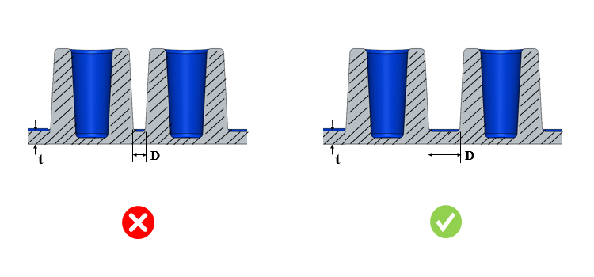

2つのボス間の最小間隔は、指定された値以上である必要があります。
冷却が困難で品質に影響を及ぼす薄肉部の発生を防ぐために、2つのボス間の最小間隔を確保する必要があります。金型壁が薄すぎる場合、製造が困難になるだけでなく、ホットブレードの発生や不均一な冷却といった問題により、金型寿命の低下を招く可能性もあります。
一般的なガイドラインとして、2つのボス間の最小間隔は、ノミナル肉厚の2倍以上であることが推奨されます。
DFMProはボス形状を識別し、2つのボス間の間隔をチェックします。距離とノミナル肉厚の比を算出し、設定された比率に対して検証を行います。距離は、ボス基部のフィレットを抑制した後に算出されます。
ユーザーは、デフォルトで設定されている比率を編集することができます。

ここで、
D = 2つのボス形状間の間隔
t = ノミナル肉厚